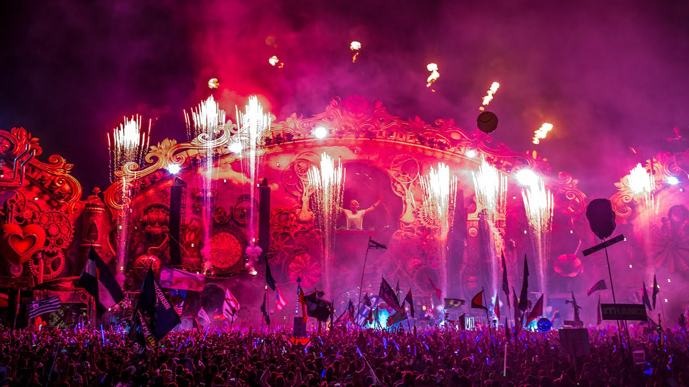
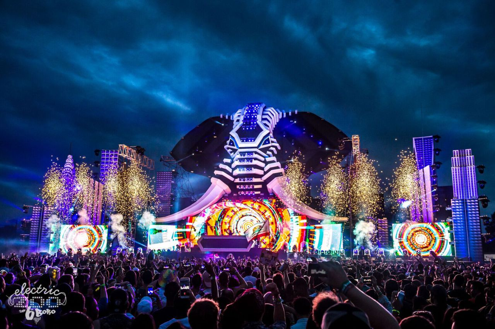

Armin Van Buuren
Tour Dates
-
September 13,2017 -Hï Ibiza, Spain
-
September 15,2017 -FSOE 500, Egypy
-
September 23, 2017 -World Club Dome South Korea, Incheon South Korea
-
September 24, 2017 -Spring Wave Sunset IV, Taipei Taiwan
-
November 11-12 2017 -EDC Orlando, Florida United States

Discography
These are some of the albums that he has produced.
-
A State of Trance -2008
-
A state of Trance -2009
-
Armin Only(Mirage)"The Music" -2011
-
A State of Trance - 2001
-
Intense -2013
-
A State of Trance -2014
-
A State of Trance -2015
-
A State of Trance:Ibiza -2017

Crowd going wild for Armin at Electic Zoo 2017 in New York City.
Armin Van Burren Ibiza 2017-Mont Cara